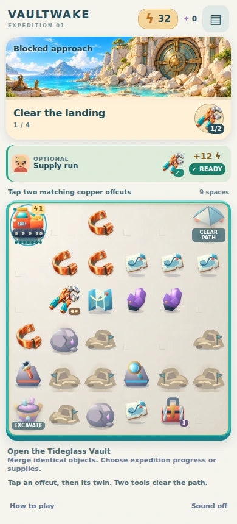
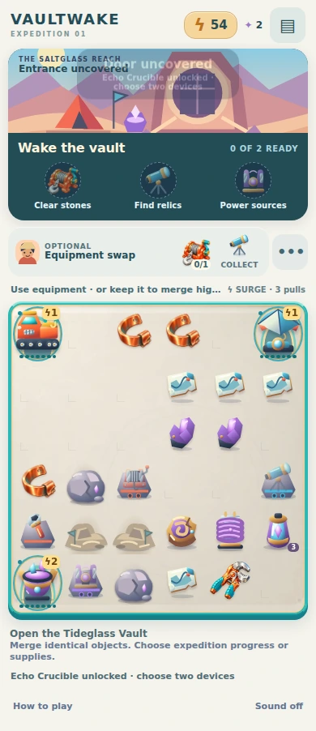
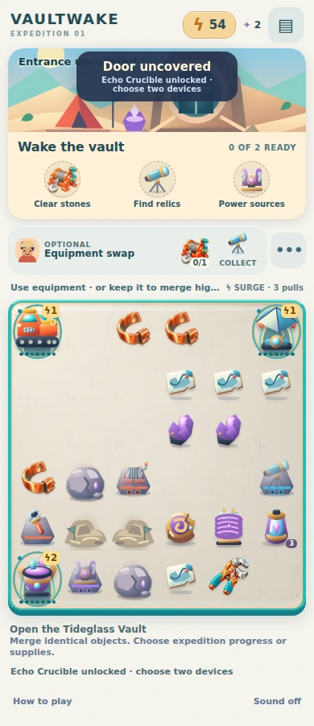

Vaultwake · mobile quality review
Compact missions and optional rewards keep the board dominant. This finish pass makes equipment use available directly from selection, highlights the receiving device, and gives later expedition scenes a warmer coastal material palette. Rules, positions and saves are unchanged.
390px · actual browser captures
Swipe sideways on a phone. Both screens retain their actual 390 CSS-pixel width. These are Chromium screenshots, not generated images.
Before · a36d4, reviewed mobile UI
After · completed quality pass
Chapter progression · same 390px gameplay state
Before · producer unlock
After · coastal palette and clearer mission choices
No AI images or dependencies were added. Existing scene vectors received material and lighting changes. The remaining vector objects still differ from the premium Fieldworks sprites; this is a focused improvement, not a claim of full commercial production quality.